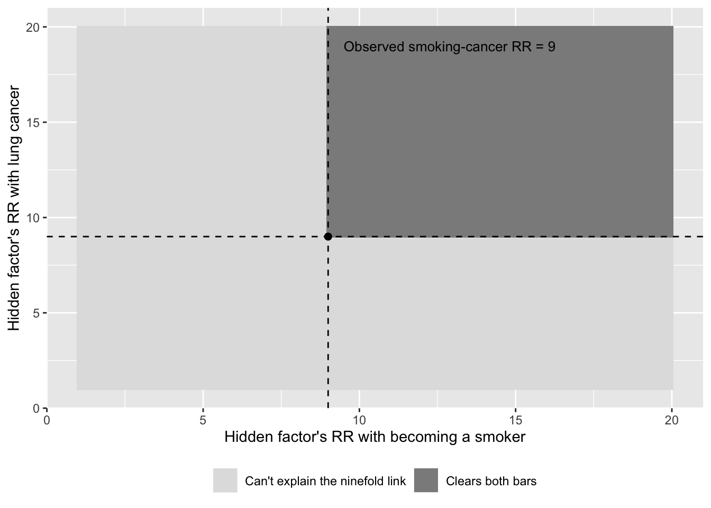
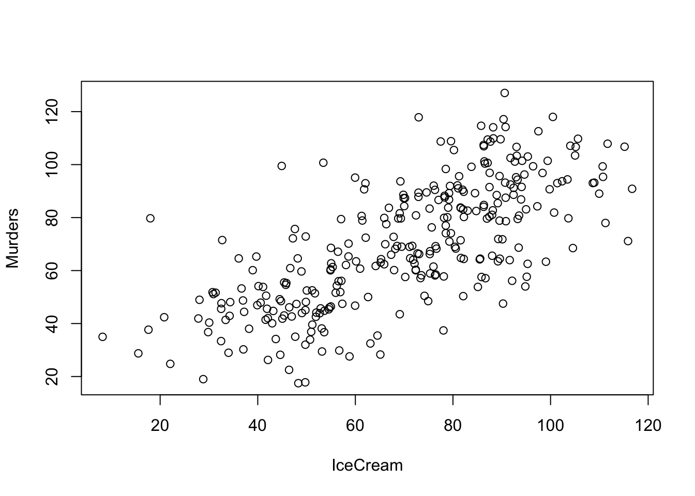
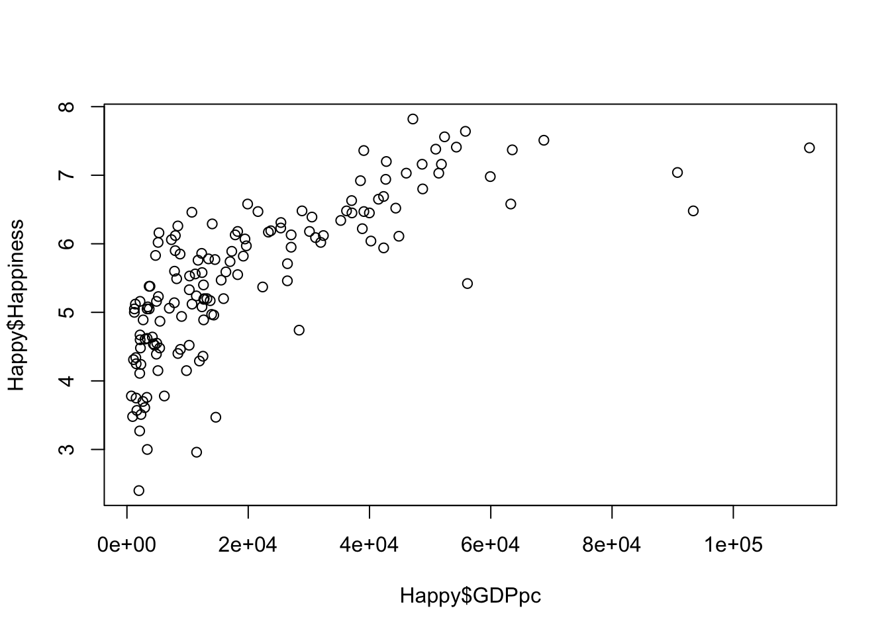
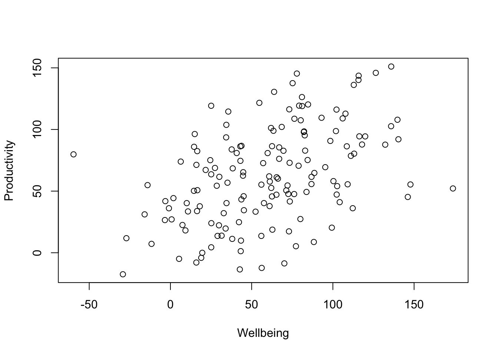
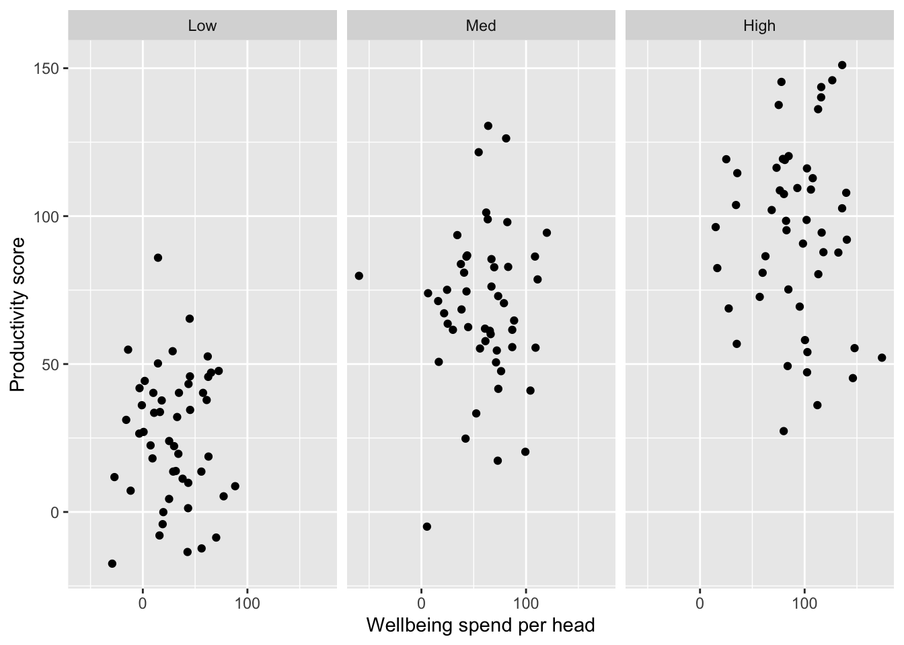

Chapter 4 Causation
This chapter supplements the content in Lecture 4.
Every chapter so far has been building toward a question this one finally asks directly: when two things move together, what would it actually take to say one causes the other?
Start with a claim you’ll meet constantly once you leave this course: a company runs a sales-training programme, and afterwards, salespeople who scored higher on the training assessment also post higher sales numbers. Training works — right?
Maybe. But notice what that claim is doing. It’s drawing an arrow: training score → sales performance. One thing causing another. And the honest first question about any arrow like that isn’t “is the correlation strong enough?” — it’s “what’s actually at the other end of it, and is anything else pointing in?”
Here’s a trick worth keeping, because you’ll use it constantly from here on: a variable is endogenous if something else in your explanation points into it — if it’s being explained. It’s exogenous if nothing is — if it’s just a starting point you’re taking as given. The easiest way to remember which is which: the end of an arrow points into the endogenous variable. Genuinely came up with that myself, and no one else has ever found it as satisfying as I do, but it’s yours now too.
In the training example, sales performance is what we’re trying to explain — arrow pointing in, endogenous. Training score is what we’re using to explain it. But is training score really where the story starts? Or is something else pointing into that too — something that also has its own arrow running straight to sales performance, independent of training altogether?
That’s the whole problem this chapter is about. Not “is there a correlation” — you already know how to check that — but “have I actually found the arrow I think I’ve found, or have I mistaken two effects of the same cause for one thing causing the other?” Sometimes the honest answer is genuinely hard to reach. Occasionally, someone reaches it anyway, against a famous opponent, with nothing but the strength of the argument. That’s where we’ll start.
4.1 Confounding
4.1.1 The Cornfield Test
By the late 1950s, the evidence linking smoking to lung cancer was overwhelming in one specific sense: smokers were getting lung cancer at roughly nine times the rate of non-smokers. Not a modest bump — ninefold.
And yet Ronald Fisher — one of the most important statisticians who ever lived, a genuine giant of the field — spent his final years arguing, in print, that this proved nothing about causation. His alternative: some unmeasured genetic factor might make a person both more likely to smoke and more likely to develop lung cancer. No causal arrow between smoking and cancer at all — just two effects of the same hidden cause. Fisher wasn’t a crank. He was applying a rule this whole chapter is going to keep insisting on: correlation isn’t causation, and a third variable can produce exactly this pattern. He was right that it could.
Jerome Cornfield’s answer wasn’t to argue Fisher’s logic was wrong — it wasn’t — but to ask a sharper question: how big would this hidden factor have to be? For a confounder to fully explain away a ninefold relationship, it isn’t enough for it to be loosely associated with smoking and loosely associated with cancer. It has to be at least as strongly tied to smoking as smoking is to cancer, and at least as strongly tied to cancer as smoking is to cancer. Both bars, not one.

Below and to the left of both dashed lines, a candidate confounder simply can’t do the job — it isn’t strongly enough tied to both smoking and cancer to produce a ninefold relationship on its own. Above and to the right of both, it isn’t mathematically ruled out — but now you have to actually name a real factor that’s this strongly linked to becoming a smoker and this strongly linked to cancer, independently of smoking itself. Genetics that strong? Diet? Something else entirely? The point isn’t that clearing both bars is impossible. It’s that nobody, in over sixty years, has ever produced a real candidate that gets close.
Nobody has ever found that factor. Fisher never named one. The argument didn’t kill the possibility of confounding — it just showed exactly what confounding would need to look like, and let the silence answer the rest.
4.1.2 The Everyday Version
You won’t often get to run an argument as tight as Cornfield’s yourself — it took decades, a real historical dataset, and the simple fact that nobody ever found the missing factor. But the everyday version of watching a confound do its work doesn’t need any of that. It shows up anywhere you have the data and don’t think to check.
You’ve probably met the classic case already, possibly at a dinner party where someone was showing off. Across US cities, ice cream sales and murder rates rise and fall together — and not weakly, either. Plot one against the other and you’ll get a relationship strong enough that if you’d found it in your own data, you’d be drafting the abstract. This isn’t a made-up example either — Tyler Vigen’s Spurious Correlations project puts the real figure at r = 0.715 across US data from 1990–2021 (https://tylervigen.com/spurious/correlation/9632_ice-cream-consumption_correlates-with_violent-crime-rates).
Nobody thinks ice cream causes murder. The obvious culprit is temperature: hot weather means more people buying ice cream, and — for reasons criminologists actually take seriously — more violent crime too. Ice cream and murder never talk to each other. They’re each just reacting to the same third thing.
That’s a confounder: a variable that causes both of the things you’re looking at, with no arrow running between them at all. And here’s what makes it worth more than a paragraph — we can simulate exactly this, watch the correlation appear, and then watch it disappear.

## [1] 0.7137528There’s the strong relationship, and it’s entirely manufactured — neither variable had any effect on the other anywhere in that code. Both were generated purely from Temp, city-months’ average monthly temperature. Now let’s split the sample into cold, mild, and hot months, and look again within each band.

## Cold Mild Hot
## 0.053207223 -0.009546515 0.067120654Not weakened. Gone. Within each band the correlation is close enough to zero to be noise. Nothing about ice cream or murder changed; we just stopped letting temperature do the confounding.
Suppose a well-meaning HR department rolls out a wellbeing programme, and a year later, teams that spent more per head on it are visibly more productive. It’s tempting — and I’ve sat in the meeting where someone was tempted — to write the business case right there.

## [1] 0.4463021But run the same check first. Departments with bigger budgets can afford both better wellbeing programmes and better everything else: staffing, tools, time.

## Low Med High
## -0.006996962 0.046068957 -0.031799717Split by department resourcing, and the wellbeing–productivity relationship folds up exactly the way ice cream and murder did.
Confounding is a story about a third variable doing its work invisibly behind two others. Selection bias is stranger still — because sometimes there isn’t a third variable at all. The relationship gets built entirely by how the sample was assembled.
4.2 Selection Bias
4.2.1 All the Data Isn’t All the Data
Here’s the plainest version, and it happened in this room. If I ask everyone here a question — say, how satisfied are you with the course so far — and I use your answers to draw a conclusion about the whole cohort, I’ve made an error before I’ve even started analysing anything. You didn’t choose to be in this sample by accident. You chose to come to this specific class, at this specific time, which makes you systematically different from the people who didn’t. Maybe more conscientious. Maybe just better at reading a timetable. Either way, whatever I conclude from this room doesn’t automatically generalise to everyone I’m claiming to describe.
That much is intuitive once it’s pointed out — nobody’s surprised that a self-selected sample is biased. What catches people out is the belief that this problem goes away once you stop sampling and start using “all the data.” A lot of big-data enthusiasm rests on exactly that idea: no sample, no sampling bias, done.
Here’s why I don’t buy it. A 2013 study analysed millions of geotagged Twitter and Foursquare posts to track real-world activity through Hurricane Sandy — genuinely all the check-in data available, not a survey, not a sample. Their headline finding: a spike in nightlife check-ins right after the storm passed, which they read as people celebrating having made it through. Taken at face value, that’s a nice, tidy story, and the paper reports it as evidence their method was picking up something real.
Read it a little more suspiciously, though, and a different story is sitting right there in the same dataset. Check-in activity — on both platforms — comes overwhelmingly from wherever population density and phone connectivity are highest. During Sandy, that wasn’t evenly distributed across New York at all: swathes of Lower Manhattan lost power outright, but Midtown and Upper Manhattan largely didn’t, while the outer boroughs and the Long Island shoreline — hit hardest by flooding and the longest power outages — simply went dark and stopped generating data almost entirely. “All the data” quietly became “all the data from the people whose phones still worked,” and the people whose phones still worked were disproportionately the ones for whom Sandy had been the least disruptive. A “celebration” spike and “the sample skewed toward people having a comparatively normal night” would look identical in a dataset built this way — and only one of those explanations was on the table.
To be clear, this isn’t the original researchers admitting to a mistake — they don’t raise the geography question themselves, and their finding is entirely honest as reported. It’s what happens when you take a real published result and ask, on your own, who actually generated this data and whether that’s the population the conclusion is really about. That’s a habit worth having with everything you read, not just this one paper.
That’s selection bias without anyone choosing anything, in the ordinary sense — nobody self-selected into being a well-connected New Yorker with power that night. The selection happened in how the data was collected, not in who volunteered. It’s the same underlying problem wearing a different disguise, and it’s the reason “we have all the data” is a claim worth being suspicious of rather than reassured by.
Sometimes, though, selection bias is more deliberate than either of those cases — a genuine filter applied on purpose — and what it does to a relationship is stranger still, because it can manufacture one that was never there at all.
4.2.2 Manufacturing a Relationship from Nothing
Here’s one that should feel more surprising than the last, because there’s no obvious third variable to blame — the surprise is that a relationship shows up at all.
Take height and basketball skill. Across the general population, these two things are essentially unrelated — being tall doesn’t make you more skilled with a basketball, and being skilled doesn’t make you tall. But look only at NBA players, and you’ll find something odd: among people who’ve actually made the league, height and skill are negatively correlated. The shorter players are, on average, the more skilled ones. Michael Jordan wasn’t tall for an NBA player. Allen Iverson was shorter still. This isn’t a fluke of two famous names — it holds up in the data, and it’s been documented both informally (Nylon Calculus, https://fansided.com/2017/12/22/nylon-calculus-nba-draft-selection-bias/) and in the peer-reviewed literature on NBA draft sampling bias.
## [1] 0.00365453## [1] -0.4462717In the pool of 20,000 draft-eligible prospects, height and skill are unrelated, exactly as we built them to be. Select down to the players good enough or tall enough (or both) to clear the bar, though, and a clear negative relationship appears out of nothing.
Nothing about height or skill changed between “general population” and “NBA players.” What changed is how the sample was built. The NBA doesn’t select on height, and it doesn’t select on skill — it selects on some combination of the two clearing a bar. You can make a roster by being exceptionally tall, or by being exceptionally skilled, but rarely need to be both. Once you only look at the players who cleared that bar, you’re looking at a sample where — among the tall ones, the skill requirement was more negotiable, and among the short ones, it wasn’t. Select on a sum, and you manufacture a relationship between the parts that was never there in the population you drew from.
Now the version with more at stake. A company hiring for a role screens on some blend of technical skill and cultural fit — nobody demands maximum on both, but the combination has to clear a bar. In the applicant pool at large, skill and fit have nothing to do with each other.
## [1] 0.04425896## [1] -0.6027258Among the people who get hired, though, they look negatively related — the highly skilled hires will tend to be the ones who scraped by on fit, and vice versa. If a manager later notices “our most technically brilliant hires are always the awkward ones” and starts wondering whether skill and personality genuinely trade off, they’re not wrong about the pattern — they’re wrong about where it came from.
4.3 Endogeneity
Here’s a useful way to see all three of these threats side by side, because they don’t compete with each other — the same study can be hit by more than one at once, and they often travel together in the same variable pair.
Go back to the sales-training question this chapter opened with: does a training course actually improve sales performance?
Confounding, you’ve already watched at work. Smarter people tend to do better both on training assessments and in actual sales. Leave intelligence unmeasured, and part of what looks like “training works” is really “smart people are good at everything” — an arrow pointing into both variables from somewhere you never accounted for.
Reverse causation is a different failure with the same symptom. Maybe training doesn’t cause sales performance at all — maybe sales performance causes how seriously someone takes training. A salesperson who’s already succeeding has no urgency to engage with a mandatory course; someone who’s struggling might throw themselves into it, hoping it turns things around. If that’s what’s happening, the arrow runs backwards from what the study assumed.
Selection bias adds a third route in. If the training course is optional, who actually chooses to do it? Often the people who feel they need it — not the stars. If untrained salespeople outperform the trained group on average, an easy but wrong conclusion is “training makes people worse.” The real explanation is that the people who opted in started from a lower baseline; training might have helped every one of them, and you’d never see it, because the comparison was never fair to begin with.
Three entirely different mechanisms — an omitted variable driving both sides, an arrow running the wrong direction, a systematically unrepresentative sample — and all three produce the identical statistical symptom: your independent variable ends up tangled up with the very thing you’re trying to explain, the error term. That symptom has a name — endogeneity — and it’s the word you’ll meet most often if you go on to read empirical papers seriously. It doesn’t tell you which of the three is happening. It just tells you that something is, and that the confident arrow you drew earlier might not be pointing the way you think.
4.4 Randomisation
So confounding, reverse causation, and selection bias share something important: all three can manufacture a relationship — or hide one — without you doing anything wrong with your statistics. The correlation you calculate is correct. It’s the story you tell about why it’s there that goes wrong.
There’s one design choice that neutralises confounding before you ever reach the analysis stage: randomisation. If who receives a treatment is decided by something like a coin flip, rather than by any pre-existing characteristic, then every confounder — measured or not, thought of or not — ends up, on average, equally represented on both sides of the comparison. Randomisation doesn’t remove confounders. It makes them irrelevant, because they can no longer line up systematically with which group you’re in.
Hold onto that idea. A few chapters from now, you’ll meet a two-study design built around exactly this problem — and you’ll be equipped to see why the second study’s fix actually works before the book explains it.